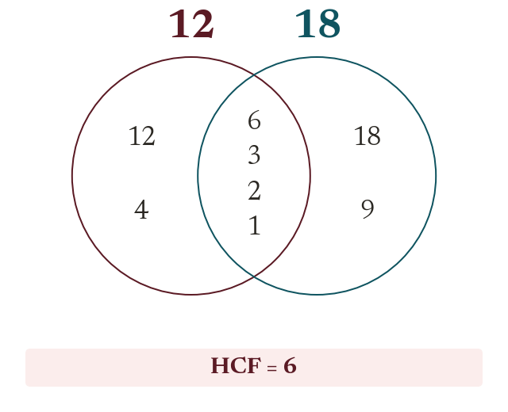

HCF and LCM
The HCF is the largest number that is a factor of both. The LCM is the smallest number that is a multiple of both.
The Highest Common Factor (HCF) of two numbers is the largest number that is a factor of both. The Lowest Common Multiple (LCM) is the smallest number that is a multiple of both.